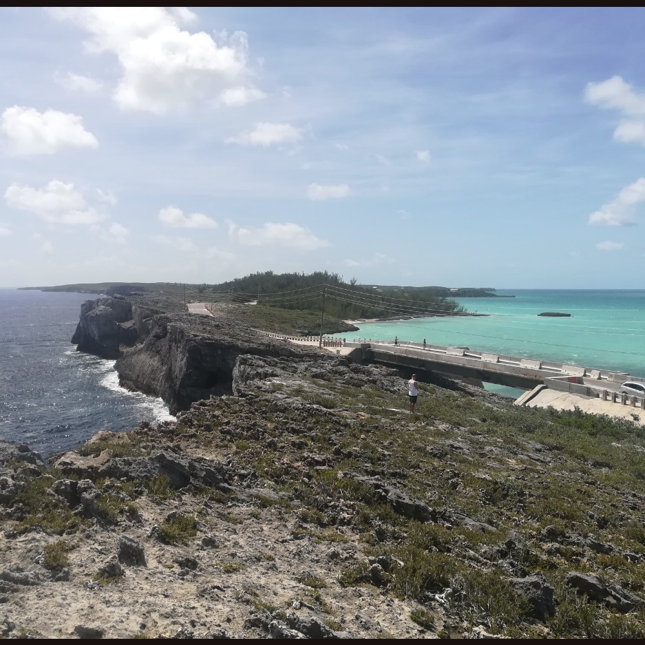
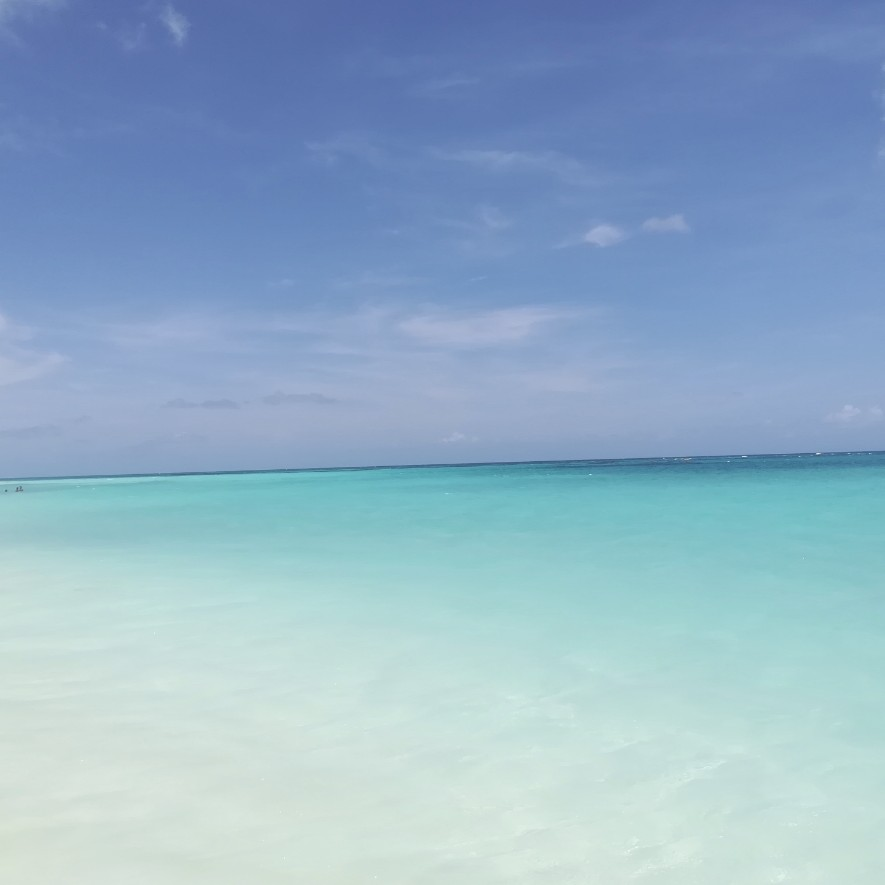
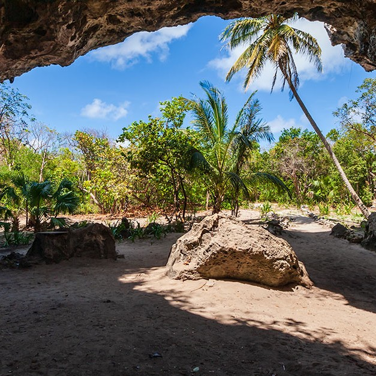
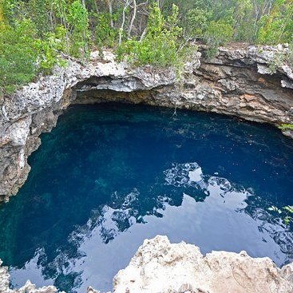
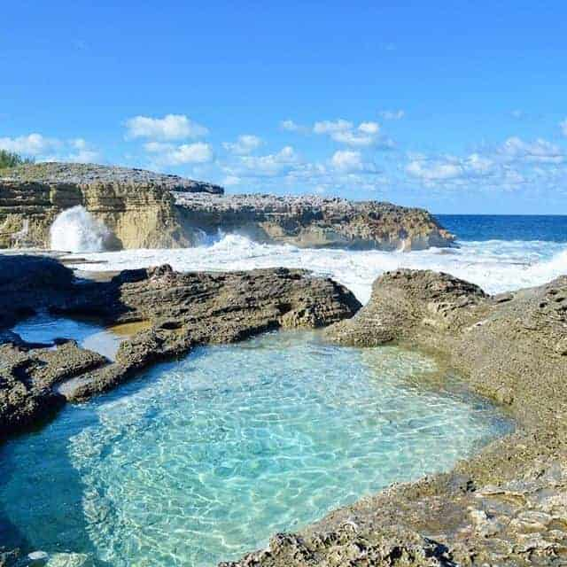
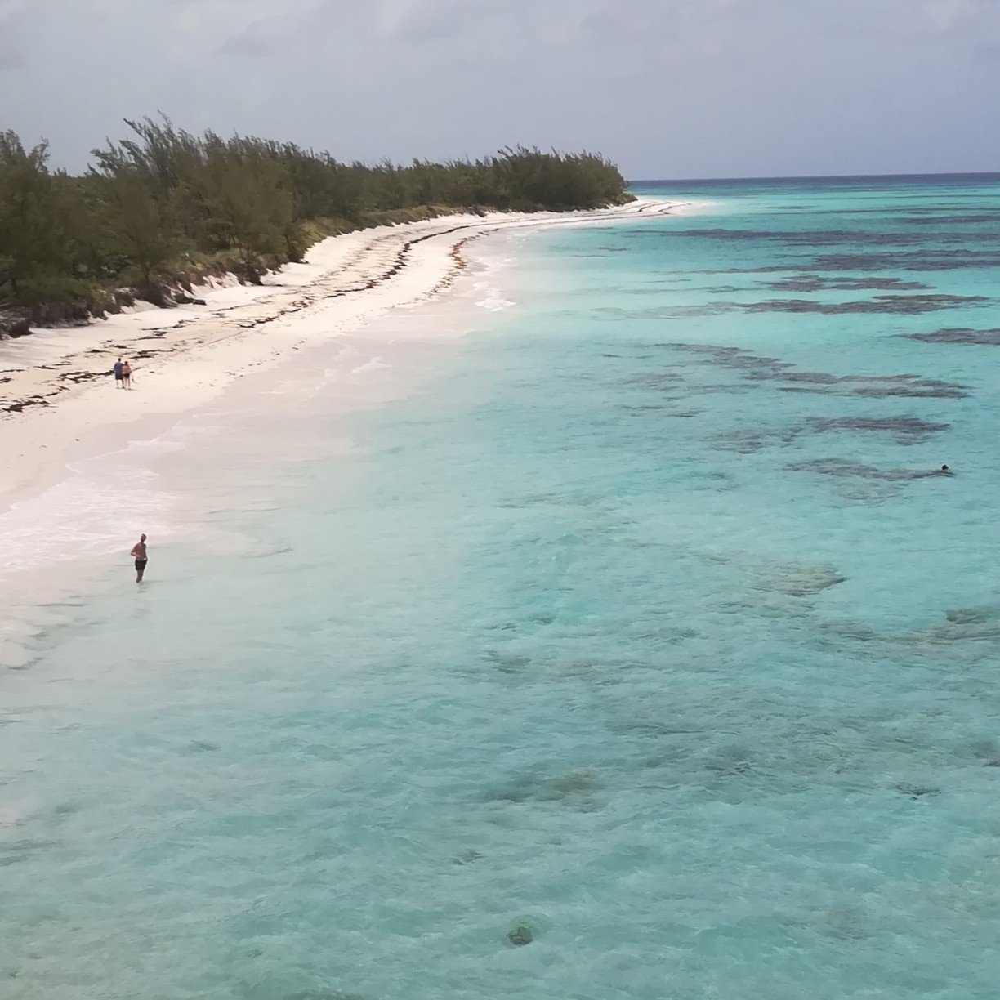
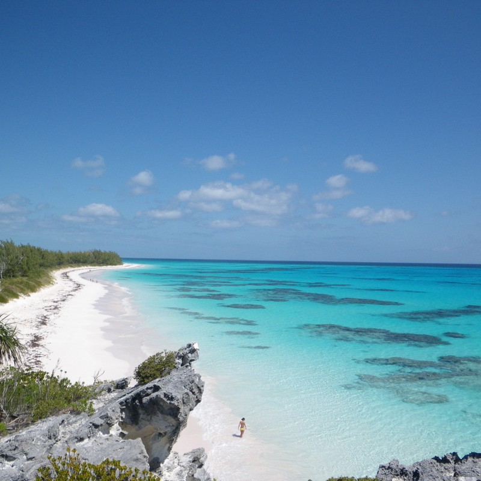
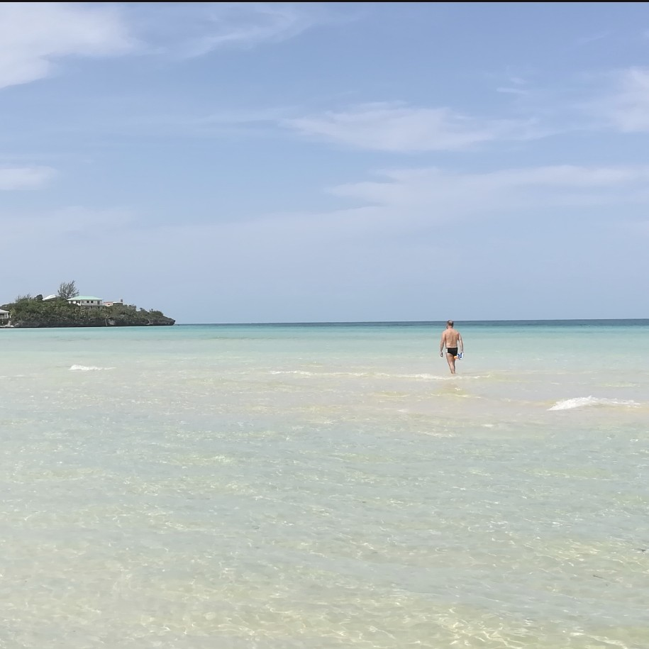
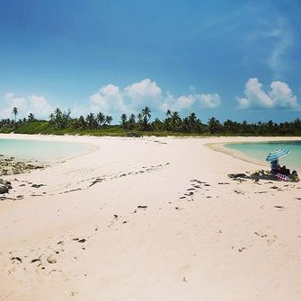
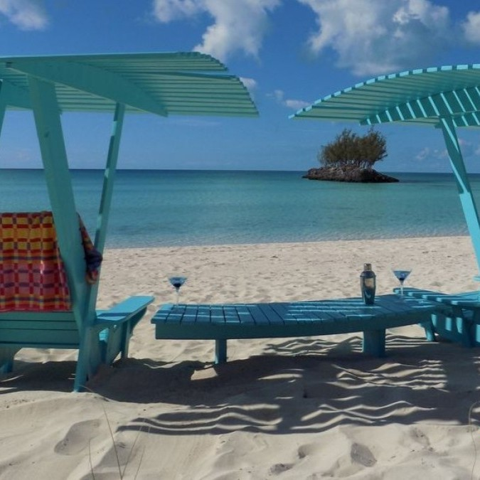

Arena rosa, aguas turquesa y el paraíso escondido de Bahamas
Eleuthera es una de las islas más espectaculares y menos masificadas de las Bahamas. Con más de 160 km de longitud y apenas un par de kilómetros de ancho en algunos puntos, esta isla alargada ofrece una combinación única de playas de arena rosa, acantilados dramáticos, agujeros azules y una tranquilidad que pocos destinos pueden igualar.
El nombre "Eleuthera" proviene del griego y significa "libertad" — y no hay mejor palabra para describir la sensación de recorrer sus carreteras costeras, descubrir calas desiertas y sumergirse en sus aguas cristalinas[citation:2]. Lejos del bullicio de Nassau y Paradise Island, Eleuthera es el destino perfecto para quienes buscan desconectar, conectar con la naturaleza y experimentar el verdadero "barefoot luxury" (lujo descalzo).
---Mi recomendación personal es alojarse en Governor's Harbour si es tu primera vez en Eleuthera, por su ubicación céntrica y oferta de servicios. Para una experiencia de lujo, The Potlatch Club o The Cove son opciones inolvidables. Si buscas autenticidad y surf, elige Gregory Town. Para familias con niños, Rainbow Bay es ideal por sus aguas tranquilas.
🚗 Alquiler de coche: Es ABSOLUTAMENTE IMPRESCINDIBLE. Eleuthera tiene más de 160 km de largo y las atracciones están muy dispersas. Sin coche, no podrás disfrutar de la isla[citation:3]. Reserva con antelación, especialmente en temporada alta.
🏠 Alternativas: Los alquileres vacacionales (Airbnb, VRBO) son muy populares en Eleuthera, especialmente para familias o grupos. Hay villas frente al mar a precios razonables.
🚫 Zonas a evitar: Eleuthera es una isla muy segura, pero evita caminar solo por la noche en zonas sin iluminación. No hay zonas peligrosas como tal.

Una de las maravillas naturales más espectaculares del Caribe. Este estrecho puente de cemento marca el punto más angosto de Eleuthera, donde el océano Atlántico (de un azul profundo y agitado) se encuentra con el mar Caribe (tranquilo y turquesa).
El contraste es impresionante: a un lado, olas enormes rompen contra las rocas; al otro, aguas cristalinas y calmadas. Es el lugar más fotografiado de la isla. Durante tormentas, las olas pueden llegar a cubrir el puente, así que ten precaución. La vista desde ambos lados es absolutamente inolvidable.

Una de las playas más famosas del mundo, con una extensión de 5 km de arena teñida de rosa por los restos de foraminíferos.
Se encuentra en Harbour Island, a solo 5-10 minutos en ferry desde North Eleuthera. El agua es turquesa y cristalina, ideal para nadar. A lo largo de la playa hay resorts, bares y restaurantes. Es el lugar perfecto para una excursión de un día.

Una cueva con una historia fascinante. En 1648, un grupo de colonos ingleses que huían de la persecución religiosa (los Eleutheran Adventurers) naufragaron en el cercano arrecife Devil's Backbone y se refugiaron en esta cueva.
El interior es amplio, con aberturas naturales en el techo por donde entra la luz del sol. Además de su historia colonial, se han encontrado restos arqueológicos de los indígenas lucayos que datan del año 800 d.C.

Un agujero azul (cenote) de agua salada, conectado al mar a través de túneles subterráneos. El agua es de un azul intenso y tan clara que se puede ver el fondo, a pesar de tener casi 30 metros de profundidad.
Hay una plataforma de salto de unos 7-8 metros de altura para los más atrevidos. Eso sí, para salir tendrás que usar una cuerda anudada, lo que añade un toque de aventura. Aunque no te tires, merece la pena verlo.

Una serie de piscinas naturales de agua salada talladas en la roca volcánica a lo largo de la costa atlántica. Cuando el mar está agitado, las olas rompen contra las rocas y llenan estas piscinas, creando un espectáculo natural.
En días tranquilos, las piscinas son como bañeras de agua salada, perfectas para un baño relajante con vistas espectaculares. Se encuentran justo al sur del Glass Window Bridge. El paisaje es dramático y muy fotogénico.

Una de las playas más bonitas y accesibles de Eleuthera. Arena blanca y suave, aguas turquesas y tranquilas. Es perfecta para nadar, hacer snorkel o simplemente relajarse.
Está cerca de Governor's Harbour, por lo que es muy popular entre los visitantes. Hay varios accesos públicos y suficiente espacio para encontrar un lugar tranquilo incluso en temporada alta. Es ideal para familias.

Considerada por muchos como la playa más espectacular de Eleuthera, y una de las mejores del Caribe. Se encuentra en el extremo sur de la isla, cerca de un faro abandonado.
La playa es enorme, con arena blanca y aguas de un turquesa intenso. Está mucho más aislada que otras playas, por lo que es fácil encontrar un tramo completamente vacío. El camino para llegar es una aventura en sí mismo (carretera de tierra).

Ten Bay Beach es una de las playas más bonitas y menos masificadas de Eleuthera. Situada en la costa caribeña (oeste) de la isla, cerca de Governor's Harbour, esta playa de arena blanca y fina se extiende a lo largo de más de un kilómetro. El agua es de un turquesa intenso, cristalina y muy tranquila (casi sin olas), perfecta para nadar y hacer snorkel.
Lo mejor de Ten Bay Beach es que suele estar casi vacía incluso en temporada alta. Solo encontrarás a unos pocos viajeros y algún local.

Twin Cove Beach es uno de los secretos mejor guardados de Eleuthera. Se trata de dos pequeñas calas gemelas separadas por una formación rocosa, situadas en la costa caribeña (oeste) cerca del pueblo de James Cistern. La arena es blanca y suave, y el agua es de un turquesa imposible, con varios tonos de azul y verde.
La cala norte es más grande y tiene aguas más profundas (ideal para nadar), mientras que la cala sur es más pequeña y resguardada (perfecta para niños o para flotar tranquilamente).

Gaulding's Cay es una pequeña isla desierta (cayo) situada frente a la costa de Eleuthera, cerca de la zona de Rainbow Bay. Lo más especial es que se puede acceder a ella caminando por el agua durante la marea baja. Un banco de arena de aguas cristalinas conecta la playa principal con el cayo.
La caminata desde la orilla hasta el cayo dura unos 10-15 minutos, con el agua a la altura de las rodillas o la cintura. El agua es tan clara que se ven los peces y las estrellas de mar en el fondo. Una vez en el cayo, hay una pequeña playa de arena blanca rodeada de palmeras.
La Queen's Highway es la carretera principal que recorre Eleuthera de norte a sur. Conduce con precaución, especialmente de noche (hay tramos sin iluminación y animales sueltos). Lleva un mapa o descarga mapas offline (la cobertura móvil es limitada en algunas zonas).
No te pierdas la puesta de sol en Ten Bay Beach (cerca de Governor's Harbour) — es uno de los mejores atardeceres de la isla[citation:7].
{kind=link}
{kind=link}
{kind=link}
{kind=link}
{kind=link}
{kind=link}
{kind=link}
{kind=link}
{kind=link}
{kind=link}
{kind=link}
{kind=link}
{kind=link}
{kind=link}
{kind=link}
{kind=link}
{kind=link}
{kind=link}
{kind=link}
{kind=link}